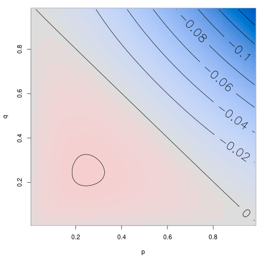
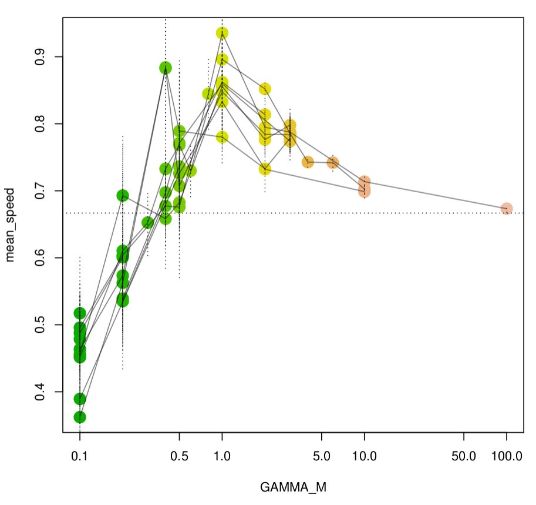
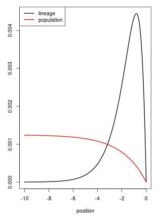

What’s the effect of dispersal?
How gene flow depends on ecology.
Peter Ralph
University of Oregon
Institute of Ecology and Evolution
5th Workshop Probability and Evolution
slides: github:petrelharp/cirm_2021_talk
The “problem” of geography
Waldo Tobler’s First Law
Everything is related to everything else, but near things are more related than distant things.
“Isolation by distance”
… means that genetic distance increases with geographic (straight-line) distance, where \[\begin{aligned} d(i,j) &= \text{(genetic distance between individuals $i$ and $j$)} \\ &= \frac{\text{number of nucleotide differences}}{\text{length of the genome}} . \end{aligned}\]
The Wright-Malecót formula says that in 2D: \[\begin{aligned} \mathbb{E}[d(i, j)] &= \frac{1}{\mathcal{N} + \log(\sigma_e / (\kappa \sqrt{2\mu}))} K_0\left( \frac{\sqrt{2\mu}|x_i-x_j|}{\sigma_e} \right) . \end{aligned}\] (see e.g., Barton, Depaulis & Etheridge (2002); Smith & Weissman 2020)
But: what’s \(\sigma_e\)?
Tracing back lineages
The lineage of a bit of genome at location \(x\) today is \[\begin{aligned} L_t = \text{(location of the genetic ancestor at time $t$ ago)}, \end{aligned}\] with \(L_0 = x\).
Properties:
stationary distribution is long-term fitness
\(\sigma_e\) is determined by \(L_t\)
Questions:
Let \(\sigma^2_e = \lim_{t \to \infty} \mathbb{E}[L_t^2]\).
What determines the sign of \[\sigma_e - \sigma ? \]
How does \(L_t\) move, anyhow?
A discrete model
Discrete space and time, but varying population sizes.
Goal: understand sources of variation.
Movement only happens at reproduction (think about plants).
Suppose: \[\begin{aligned} N(x,t) &= \text{(number of individuals $t$ generations ago at $x$)} \\ m(x, y) &= \text{(proportion of seeds from $x$ that go to $y$)} \end{aligned}\]
… and surviving individuals are uniform choices out of available seeds.
and so \[\begin{aligned} \mathbb{P}\{ L_{t+1} = y \;|\; L_t = x \} &= \frac{ N(y,t) m(y, x) } { \sum_z N(z,t) m(z, x) } . \end{aligned}\]
Big/small worlds
Much, much simpler:
Assume that:
We’re in one dimension.
\(L_t\) is Markov given \(N\) (generally requires \(N\) to be large).
\(N(x,t)\) is reversible, Markov, and stationary.
\(N(x,t) \in \{G, B\}\), with \(G \gg B\).
\(m(x,y) = 1/3\) if \(|x-y| \le 1\).
\[\begin{aligned} \text{Note: forwards dispersal has } \sigma^2 = \frac{2}{3} . \end{aligned}\]
Then \(L_{t+1} \; | L_t = x\):
- chooses a “good” patch uniformly from \(\{x-1, x, x+1\}\), if any;
- if not, chooses a neighboring patch uniformly.
Case 1: no temporal correlations
Suppose
- \(N(t, \cdot)\) is independent for each \(t\), and
- \(N(t, x)\) is Markov in \(x\) with states \(\{G, B\}\) and transition matrix \[\begin{aligned} P = \begin{bmatrix} 1-p & p \\ q & 1-q \\ \end{bmatrix} . \end{aligned}\]
| habitat | probability | \((\Delta L)^2\) |
|---|---|---|
| GGG | \(\frac{p}{p+q} (1-q)^2\) | 2/3 |
| GGB/BGG | \(\frac{p}{p+q} (1-q)q\) | 1/2 |
| GBB/BBG | \(\frac{p}{p+q} q(1-p)\) | 1 |
| GBG | \(\frac{p}{p+q} qp\) | 1 |
| BGB | \(\frac{q}{p+q} pq\) | 0 |
| BBB | \(\frac{q}{p+q} (1-p)^2\) | 2/3 |
\[\begin{aligned} \mathbb{E}[(L_1 - L_0)^2] = \frac{2}{3} + \frac{ pq } {3 (p + q) } \left(1 - (p + q)\right) . \end{aligned}\]
\[\begin{aligned} &\sigma^2_e - \frac{2}{3} \\ &\qquad {} = \frac{ pq } {3 (p + q) } \left(1 - (p + q)\right) . \end{aligned}\] and so \[\begin{aligned} \sigma_e > \sigma \qquad \text{iff} \quad p + q < 1, \end{aligned}\]
i.e., iff
- \(P\) has only positive eigenvalues.
- the environment does not oscillate.

So: the random environment can either slow down or speed up a lineage
… even with no temporal correlations!
What about temporal correlations?
With a reversible-in-time Markovian environment, at stationarity, with the same distribution in space,
What about temporal correlations?
With a reversible-in-time Markovian environment, at stationarity, with the same distribution in space,
changing temporal correlations can also increase or decrease speed.

A model for diffusion limits
Now let’s move to continuous space.
The model:
Birth, establishment, and establishment rates depend on local population densities (like Bolker-Pacala):
- \(N\): scaling factor for density
- \(\eta_t\): point measure with \(1/N\) for each individual
- \(\epsilon\): interaction distance
- \(\bar \eta_t = p_\epsilon * \eta_t / N\): rescaled, smoothed population density
- \(p_\epsilon\): the heat kernel
- \(\gamma(x, \bar \eta_t(x))\): per capita birth rate at \(x\)
- \(q(x, y)\): probability density a juvenile disperses to \(y\)
- \(r(y, \bar \eta_t(y))\): juvenile establishment probability at \(y\)
- \(\mu(x, \bar \eta_t(x))\): death rate at \(x\)
For instance
Mortality increases with crowding: \(\gamma\) and \(r\) are constant, while \[\begin{aligned} \mu(x, u) &= \mu_0 \left( 1 - \frac{1}{1 + \exp(u)} \right) . \end{aligned}\]
Or, for instance
Fecundity decreasing with crowding: \(\mu\) and \(r\) are constant, while \[\begin{aligned} \gamma(x, u) &= \gamma_0 \left( \frac{1}{1 + \exp(u)} \right) . \end{aligned}\]
How’s the density change?
\[\begin{aligned} & \hphantom{\int} \; N \bar \eta(y) \gamma(y, \bar \eta) \; \hphantom{q(y, dx)} &\qquad &\text{(birth at $y$)} \\ & \int \; \hphantom{N \bar \eta(y) \gamma(y, \bar \eta)} \; q(y, dx) r(x, \bar \eta) &\qquad &\text{(dispersal to $x$)} \end{aligned}\]
and
\[\begin{aligned} & {} - N \bar \eta (x) \mu(x, \bar \eta) & \qquad &\text{(death)} \end{aligned}\]
The mean measure
So: for a test function \(f\), \[\begin{aligned} & \lim_{dt \searrow 0} \frac{1}{dt} \left. \mathbb{E} \left[ \int f(x) \bar \eta_{dt}(dx) - \int f(x) \bar \eta_0(dx) \;|\; \bar \eta_0 = \bar \eta \right] \right\vert_{t=0} \\ &\qquad = \int \int f(z) r(z, \bar \eta) q(x, dz) \gamma(x, \bar \eta) \bar \eta(dx) \\ &\qquad \qquad {} - \int f(x) \mu(x, \bar \eta) \bar \eta(dx) . \end{aligned}\]
\[\begin{aligned} &{} = \int \left\{ \int \left( f(z) r(z, \bar \eta) - f(x) r(x, \bar \eta) \right) q(x, dz) \right\} \gamma(x, \bar \eta) \bar \eta(dx) \\ &\qquad \qquad {} + \int f(x) \left\{ r(x, \bar \eta) \gamma(x, \bar \eta) - \mu(x, \bar \eta) \right\} \bar \eta(dx) . \end{aligned}\]
Limits
Rescale time by \(\theta\). As \(\theta \to \infty\):
to see lineages moving, we need variance of dispersal distance of \(1/\theta\), and \[ \theta \int g(y) q_\theta(x, dy) \to \Delta g(x) \]
Suppose the density measure converges: \[ \bar \eta_\theta \to \Xi \]
Long-term behavior is “near equilibrium”: \[ \theta\left( r(x, \bar \eta) \gamma(x, \bar \eta) - \mu(x, \bar \eta) \right) \to F(x, \Xi) . \]
and so as \(\theta \to \infty\), \[\begin{aligned} & \lim_{dt \searrow 0} \frac{1}{dt} \left. \mathbb{E} \left[ \int f(x) \bar \eta_{dt}(dx) - \int f(x) \bar \eta_0(dx) \;|\; \bar \eta_0 = \bar \eta \right] \right\vert_{t=0} \\ &\qquad \to \int \gamma(x, \Xi) \Delta\left( f(\cdot) r(\cdot, \Xi) \right)(x) \Xi(dx) \\ &\qquad \qquad {} + \int f(x) F(x, \Xi) \Xi(dx) . \end{aligned}\]
What about noise?
If reproduction is Poisson:
\[\begin{aligned} & \lim_{dt \searrow 0} \frac{1}{dt} \left. \mathbb{E} \left[ \left( \int f(x) \bar \eta_{dt}(dx) - \int f(x) \bar \eta_0(dx) \right)^2 \;|\; \bar \eta_0 = \bar \eta \right] \right\vert_{t=0} \\ &\quad {} = \frac{\theta}{N} \left\{ \int \gamma(x, \bar \eta) \int f^2(y) r(y, \bar \eta) q(x, dy) \bar \eta(dx) \right. \\ &\qquad \qquad \left. {} + \int \mu(x, \bar \eta) f^2(x) \bar \eta(dx) \right\} \end{aligned}\]
\[\begin{aligned} &\quad {} \propto \frac{\theta}{N} . \end{aligned}\]
When is the limit stochastic?
Quadratic variation of the limit is nonzero if \[ N = \rho \theta \] for some \(\rho > 0\).
In other words, since dispersal distance is \(1/\sqrt{\theta}\): \[\begin{aligned} N_\text{loc} &:= \text{(mean number of individuals within distance $1/\sqrt{\theta}$)} \\ &\propto N / \theta \\ &= \rho . \end{aligned}\]
… i.e., if Wright’s neighbhood size is finite in the limit.
Deterministic limits: \(\theta/N \to 0\)
If the limiting measure has density \(\Xi_t(x) dx\), then it’s a weak solution to \[\begin{aligned} \frac{d}{dt} \Xi_t(x) &= r(x, \Xi) \Delta\left( \gamma(\cdot, \Xi_t) \Xi_t(\cdot) \right)(x) + F(x, \Xi_t) \Xi_t(x) . \end{aligned}\]
i.e., \[\begin{aligned} \dot \Xi = r \Delta\left( \gamma \Xi \right) + F \Xi . \end{aligned}\]
Reaction-diffusion equations?
Recall that e.g., \[\begin{aligned} r(x, \Xi) = r(\int p_\epsilon(x, y) \Xi(dy)) . \end{aligned}\]
… can we also take \(\epsilon \to 0\), getting \[\begin{aligned} \frac{d}{dt} \Xi_t(x) &= r(\Xi(x)) \Delta\left( \gamma(\Xi_t(\cdot)) \Xi_t(\cdot) \right)(x) + F(\Xi_t(x)) \Xi_t(x) ? \end{aligned}\]
What do we need to know?
With \[\bar \eta^\epsilon \to \Xi^\epsilon \qquad \text{as } \theta \to \infty,\] can we take \(\epsilon \to 0\) also so that \[\bar \eta^\epsilon \to \Xi ? \]
Since rates depend on \(p_\epsilon * \bar \eta\), it sufficies if
- \(p_\epsilon * \bar \eta^\epsilon \approx p_\epsilon * \Xi^\epsilon\) (convergence as \(\theta \to \infty\))
- \(p_\epsilon * \Xi^\epsilon \approx p_\epsilon * \Xi\) (needs more explicit conditions!)
- \(p_\epsilon * \Xi \approx \Xi\) (solution is smooth)
But, careful now…

Gilia Patterson
death: \(\mu = 0.3\) per generation
establishment: \(r = 0.7\)
dispersal: Gaussian with SD \(\sigma\)
local density: in circle of radius \(\epsilon\)
reproduction: with \(K=2\), \(\lambda=3\), \[ \gamma = \frac{\lambda}{1 + \text{(local density)}/K} \]
non-spatial equilibrium density: \[ K \left( \frac{\lambda}{1 - r} - 1 \right) .\]
Try it out yourself: SLiM code at github.com/petrelharp/cirm_2021_talk
- dispersal distance \(\sigma = 1/\sqrt{\theta} = 3\)
- interaction distance \(\epsilon = 1\)
- dispersal distance \(\sigma = 1/\sqrt{\theta} = 0.2\)
- interaction distance \(\epsilon = 1\)
- mean # offspring \(\gamma \propto (1 + \text{(density)} / K)^{-1}\)
What about the lineages?
Goal: obtain a large-\(N\) scaling limit of population density that retains the notion of lineages, in three cases:
- superprocess
- deterministic, nonlocal coefficients
- deterministic, local coefficients
Method: a lookdown construction, following Kurtz & Rodrigues 2011 and Etheridge & Kurtz 2019.
Deterministic, nonlocal coefficients:
Theorem: Suppose that \[\begin{aligned} r(x, \bar \eta) &= r(x), \qquad \text{twice diff'able} \\ \gamma_\theta(x, \bar \eta) &= \gamma(p_\epsilon * \bar \eta(x)) + \frac{G(p_\epsilon * \bar \eta(x))}{\theta r(x)} \\ \mu_\theta(x, \bar \eta) &= \mu(p_\epsilon * \bar \eta(x)) + \frac{H(p_\epsilon * \bar \eta(x))}{\theta} \\ q_\theta(x, dy) &= p_{1/\theta}(x, dy) , \end{aligned}\] with \(\gamma\), \(G\), \(H\), and \(r\) uniformly bounded and Lipschitz continuous. Then a lookdown construction with maximum level \(N \to \infty\), if \(\theta(N) / N \to 0\), converges in the sense of finite-dimensional distributions to a measure-valued process \((\eta_t^\infty)_{t \ge 0}\).
(theorem, continued)
The limit is a Cox measure with intensity a product of \(\Xi_t \times \Lambda\), and for every continuous, bounded \(f : \mathbb{R}^d \to \mathbb{R}_+\), \[\begin{aligned} & \int f(x) \Xi_t(dx) - \int f(x) \Xi_0(dx) \\ &= \int_0^t \int \gamma(p_\epsilon * \Xi_s(x)) \Delta \left( f(\cdot) r(\cdot) \right)(x) \\ {}&\qquad + f(x) \left\{ G(p_\epsilon * \Xi_s(x)) - H(p_\epsilon * \Xi_s(x)) \right\} \xi_s(dx) ds . \end{aligned}\]
Consequences for stationary landscapes
If a deterministic, local limit holds, with dispersal \(N(m, \sigma^2 I)\), lineages should move in a stationary population density \(n(x) = d\Xi/dx\) as \[\begin{aligned} dL_t = r(L_t) \gamma(L_t) \left\{ \left( 2\sigma^2 \nabla \log(n\gamma)(L_t) - m \right) dt + \sigma dB_t \right\} . \end{aligned}\]
i.e., as Brownian motion run at speed \(\sigma \gamma(y) n(y)\) in the potential \[\begin{aligned} n(y) \gamma(y) e^{-my/(2\sigma^2)} , \end{aligned}\] … which has stationary distribution \[\begin{aligned} \frac{n(y)}{r(y)} e^{-my/(2\sigma^2)} . \end{aligned}\]
Lineages in expanding populations
Many population models will expand into unoccupied habitat, e.g.:
The classic Fisher-KPP equation: \[\begin{aligned} dn = \left( \Delta n + s n (1-n) \right) dt \end{aligned}\]
… or, with an Allee effect: \[\begin{aligned} dn = \left( \Delta n + s n (1-n) (Cn - 1) \right) dt \end{aligned}\]
Recall that \[\begin{aligned} \dot \Xi = r \Delta(\gamma \Xi) + F \Xi , \end{aligned}\] where \[\begin{aligned} F(x, \Xi) = r(x, \bar \eta) \gamma(x, \bar \eta) - \mu(x, \bar \eta) . \end{aligned}\]
So, we’d get \[\begin{aligned} dn = \left( \Delta n + s n (1-n) (Cn - 1) \right) dt \end{aligned}\] with \(r = \gamma = 1\) and \[\begin{aligned} \mu(x, n) = 1 + s (n - 1) (Cn - 1) . \end{aligned}\]
Travelling waves
Suppose the population density has a traveling wave profile: \[\begin{aligned} n(x,t) = w(x - ct) \end{aligned}\] and a determinstic, local limit holds:
… then \(L - ct\) has generator \[\begin{aligned} \phi \mapsto r(x) \gamma(x) \left( 2 \nabla \log(\gamma w)(x) \cdot \nabla \phi(x) + \Delta \phi(x) \right) \\ \qquad {} + c \cdot \nabla \phi(x) . \end{aligned}\]
Example: PME
For instance, take the porous medium equation with logistic growth (in 1D): \[\begin{aligned} \partial_t n_t(x) = \partial_x^2 [n_t(x)^2] + n_t(x) (1 - n_t(x)) , \end{aligned}\] with stable solution \[\begin{aligned} n_t(x) = \left( 1 - \exp\left( \frac{1}{2} (x - t) \right)\right)_+ \end{aligned}\]
To get this, we want \(r=1\) and \[\begin{aligned} \gamma(x, n) &= n(x) \\ \mu(x, n) &= 2 n(x) - 1 . \end{aligned}\]
…so in the stationary frame, the lineage’s generator is \[\begin{aligned} \phi &\mapsto w(x) \left( \phi_{xx} + 4 (log w)_x \phi_x \right) + \phi_x \\ &= \left(1 - e^{x/2}\right) \phi_{xx} + \left(1 - 2 e^{x/2}\right) \phi_x \qquad \text{on } x < 0. \end{aligned}\]
The lineage has stationary distribution \[\begin{aligned} \pi(x) \propto e^x \left(1 - e^{x/2}\right) \qquad \text{for } x < 0 . \end{aligned}\]
